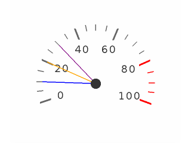

Gauge (lv_gauge)¶
Overview¶
The gauge is a meter with scale labels and needles.
You can use the lv_gauge_set_scale(gauge, angle, line_num, label_cnt) function to adjust the scale angle and the number of the scale lines and labels.
The default settings are: 220 degrees, 6 scale labels and 21 lines.
The gauge can show more then one needles.
Use the lv_gauge_set_needle_count(gauge, needle_num, color_array) function to set the number of needles and an array with colors for each needle. The array must be static or global variable becasue only its pointer is stored.
You can use lv_gauge_set_value(gauge, needle_id, value) to set the value of a needle.
To set a critical value use lv_gauge_set_critical_value(gauge, value). The scale color will be changed to line.color after this value. (default: 80)
The range of the gauge can be specified by lv_gauge_set_range(gauge, min, max). The deafult range is 0..100.
Styles¶
The gauge uses one style which can be set by lv_gauge_set_style(gauge, LV_GAUGE_STYLE_MAIN, &style). The gauge’s properties are derived from the following style attributes:
body.main_color line’s color at the beginning of the scale
body.grad_color line’s color at the end of the scale (gradient with main color)
body.padding.hor line length
body.padding.inner label distance from the scale lines
body.radius radius of needle origin circle
line.width line width
line.color line’s color after the critical value
text.font/color/letter_space label attributes
Example¶
C¶
Gauge image
code
/*Create a style*/
static lv_style_t style;
lv_style_copy(&style, &lv_style_pretty_color);
style.body.main_color = LV_COLOR_HEX3(0x666); /*Line color at the beginning*/
style.body.grad_color = LV_COLOR_HEX3(0x666); /*Line color at the end*/
style.body.padding.hor = 10; /*Scale line length*/
style.body.padding.inner = 8 ; /*Scale label padding*/
style.body.border.color = LV_COLOR_HEX3(0x333); /*Needle middle circle color*/
style.line.width = 3;
style.text.color = LV_COLOR_HEX3(0x333);
style.line.color = LV_COLOR_RED; /*Line color after the critical value*/
/*Describe the color for the needles*/
static lv_color_t needle_colors[] = {LV_COLOR_BLUE, LV_COLOR_ORANGE, LV_COLOR_PURPLE};
/*Create a gauge*/
lv_obj_t * gauge1 = lv_gauge_create(lv_scr_act(), NULL);
lv_gauge_set_style(gauge1, &style);
lv_gauge_set_needle_count(gauge1, 3, needle_colors);
lv_obj_align(gauge1, NULL, LV_ALIGN_CENTER, 0, 20);
/*Set the values*/
lv_gauge_set_value(gauge1, 0, 10);
lv_gauge_set_value(gauge1, 1, 20);
lv_gauge_set_value(gauge1, 2, 30);
MicroPython¶
No examples yet.
API¶
Typedefs
-
typedef uint8_t
lv_gauge_style_t¶
Functions
-
lv_obj_t *
lv_gauge_create(lv_obj_t *par, const lv_obj_t *copy)¶ Create a gauge objects
- Return
pointer to the created gauge
- Parameters
par: pointer to an object, it will be the parent of the new gaugecopy: pointer to a gauge object, if not NULL then the new object will be copied from it
-
void
lv_gauge_set_needle_count(lv_obj_t *gauge, uint8_t needle_cnt, const lv_color_t colors[])¶ Set the number of needles
- Parameters
gauge: pointer to gauge objectneedle_cnt: new count of needlescolors: an array of colors for needles (with ‘num’ elements)
-
void
lv_gauge_set_value(lv_obj_t *gauge, uint8_t needle_id, int16_t value)¶ Set the value of a needle
- Parameters
gauge: pointer to a gaugeneedle_id: the id of the needlevalue: the new value
-
static void
lv_gauge_set_range(lv_obj_t *gauge, int16_t min, int16_t max)¶ Set minimum and the maximum values of a gauge
- Parameters
gauge: pointer to he gauge objectmin: minimum valuemax: maximum value
-
static void
lv_gauge_set_critical_value(lv_obj_t *gauge, int16_t value)¶ Set a critical value on the scale. After this value ‘line.color’ scale lines will be drawn
- Parameters
gauge: pointer to a gauge objectvalue: the critical value
-
void
lv_gauge_set_scale(lv_obj_t *gauge, uint16_t angle, uint8_t line_cnt, uint8_t label_cnt)¶ Set the scale settings of a gauge
- Parameters
gauge: pointer to a gauge objectangle: angle of the scale (0..360)line_cnt: count of scale lines. The get a given “subdivision” lines between label,line_cnt= (sub_div + 1) * (label_cnt - 1) + 1label_cnt: count of scale labels.
-
static void
lv_gauge_set_style(lv_obj_t *gauge, lv_gauge_style_t type, lv_style_t *style)¶ Set the styles of a gauge
- Parameters
gauge: pointer to a gauge objecttype: which style should be set (can be onlyLV_GAUGE_STYLE_MAIN)style: set the style of the gauge
-
int16_t
lv_gauge_get_value(const lv_obj_t *gauge, uint8_t needle)¶ Get the value of a needle
- Return
the value of the needle [min,max]
- Parameters
gauge: pointer to gauge objectneedle: the id of the needle
-
uint8_t
lv_gauge_get_needle_count(const lv_obj_t *gauge)¶ Get the count of needles on a gauge
- Return
count of needles
- Parameters
gauge: pointer to gauge
-
static int16_t
lv_gauge_get_min_value(const lv_obj_t *lmeter)¶ Get the minimum value of a gauge
- Return
the minimum value of the gauge
- Parameters
gauge: pointer to a gauge object
-
static int16_t
lv_gauge_get_max_value(const lv_obj_t *lmeter)¶ Get the maximum value of a gauge
- Return
the maximum value of the gauge
- Parameters
gauge: pointer to a gauge object
-
static int16_t
lv_gauge_get_critical_value(const lv_obj_t *gauge)¶ Get a critical value on the scale.
- Return
the critical value
- Parameters
gauge: pointer to a gauge object
-
uint8_t
lv_gauge_get_label_count(const lv_obj_t *gauge)¶ Set the number of labels (and the thicker lines too)
- Return
count of labels
- Parameters
gauge: pointer to a gauge object
-
static uint8_t
lv_gauge_get_line_count(const lv_obj_t *gauge)¶ Get the scale number of a gauge
- Return
number of the scale units
- Parameters
gauge: pointer to a gauge object
-
static uint16_t
lv_gauge_get_scale_angle(const lv_obj_t *gauge)¶ Get the scale angle of a gauge
- Return
angle of the scale
- Parameters
gauge: pointer to a gauge object
-
static const lv_style_t *
lv_gauge_get_style(const lv_obj_t *gauge, lv_gauge_style_t type)¶ Get the style of a gauge
- Return
pointer to the gauge’s style
- Parameters
gauge: pointer to a gauge objecttype: which style should be get (can be onlyLV_GAUGE_STYLE_MAIN)
-
struct
lv_gauge_ext_t¶ - #include <lv_gauge.h>